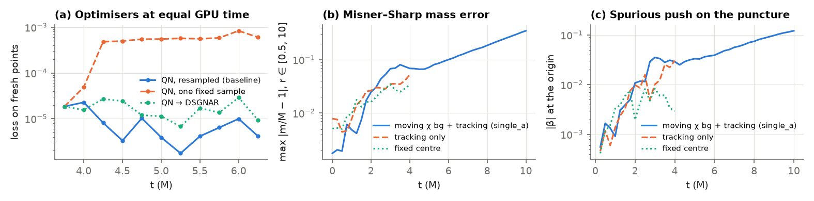
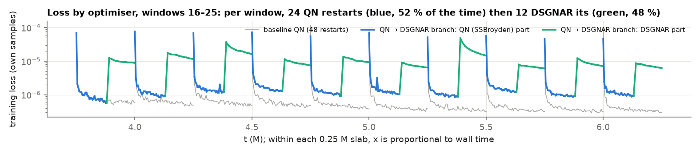
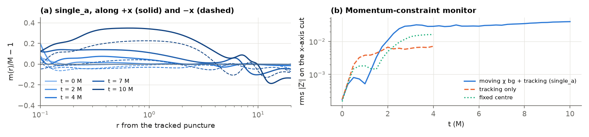

single_a to 10 M; the two drift diagnostics to 4 M.The three received versions (bundle base, multi-GPU _gpus, Oct-16 optimiser update) were merged by a
three-way merge over a reconstructed ancestor; with default flags the merged script reproduces the Oct-16 loss history
byte for byte. The merged Crunch of 17 Oct is installed (bit-identical with its options off) and
scale_invariant is now on by default: without it QN freezes at loss ~1e-11 (39 of 40 updates skipped
when the loss is scaled by 1e-8). A batched second-order forward pass for the residual's derivatives
(--deriv_mode taylor) agrees with autodiff to 1e-15 and is 1.75× faster on the A30.
The production size fits one A30: 9.5 of 24 GB, ~25 min per window.
Three branches forked from the same window-15 network (same seeds), ~3 h 45 each, graded on fresh points identical for all (the logged loss is measured on each run's own samples and is 5–10× optimistic):
| branch | per window | held-out loss / baseline | reading |
|---|---|---|---|
| QN, resampled (baseline) | 48 restarts × 250 its | 1 | production setting |
| QN, one fixed sample | same, no resampling | 50–330 | overfits the sample; gauge rows 10⁴× worse |
| QN → DSGNAR | 24 restarts + 12 DSGNAR its, s = 1024 | 2–7 (one window 0.7) | every DSGNAR step accepted, too few of them |

ldc/ldc.ipynb)The lid-driven-cavity notebook drives the authors' implementation (vendored in
Evolution_try/vendor/dsgnar_pinn) step by step; ours is Stationary's re-implementation. Same algorithm,
but these differences matter for comparing results:
| aspect | paper code (ldc) | our port (SBH) |
|---|---|---|
| sketched Jacobian | dense rows per macro-batch (jacrev vmapped over 4-point sub-batches), DCT, CountSketch, in a lax.scan | s forward tangents (JVPs) through the whole residual, CountSketch fused |
| its cost, measured (CPU, 6×40, 64 pts) | 200 ms (s = 1024) | 530 ms: 2.5–2.6× slower, also at s = 3072 |
| sketch size | s = d/3 (a30 preset 1665 for 5k params; paper 4000 for 11k) | s = 1024 ≈ d/9 in the branch test |
| role | primary optimiser from the initial network, 200 steps, then SSBroyden polish; graded by rel. L2 vs a reference | 12 steps after 24 QN restarts, in every window |
| step and radius | step evaluated once; accept iff ρ > 0 (no overshoot rejection in the code); radius → PCHIP radius | default: line scan, calibration, grow-only radius with a floor; --dsgnar_paper follows the paper's text (rejects overshoots) |
| target ratio | 0.075 fixed in the notebook; the trainer switches to 0.5 after λ bottoms out | 0.15 → 0.5 (paper preset 0.075 → 0.5) |
| precision, weights, network | float32 pre-pass then float64; fixed weights (1e-2, 1); SIREN | float64 only; λ-weights of the loss, optional reweighting; tanh MLP |
So the branch test is not the paper's use of DSGNAR: a third of its sketch, a tenth of its iterations, and a slower Jacobian. It answers “does a short DSGNAR phase help QN?” (no), not “is DSGNAR a better primary optimiser here?”.
A single puncture should not move; in single_a the tracked position reaches (−0.121, 0.039) by t = 10 M. The shift at the
origin, which drives the tracker, measures the push directly (a χ minimum cannot: χ ~ (2r/m)⁴ is flat to the network's error within r ≈ 0.05):
| run (t ≤ 4 M) | βˣ(0), t = 2.75 | βˣ(0), t = 4 | reading |
|---|---|---|---|
moving χ background + tracking (single_a) | 2.9e-2 | 2.8e-2 | background not needed for the drift |
tracking only (--chi_bg_mode physical) | 3.5e-3 | 3.0e-2 | |
| fixed centre, no tracking | 4.0e-3 | 2.9e-3 | 10× smaller: tracking is the cause |
The likely loop: the focused point clouds follow the track, a small asymmetric β moves the track, the off-centre clouds teach a
larger asymmetric β. One seed per setting. The Misner–Sharp mass (verified exact, 4e-15, on the initial data) grows alike in all three
runs to t = 4 M and to 35 % by 10 M in single_a, mostly at r ≈ 0.3–2, while the logged loss falls from 1e-6 to 2e-7;
the 10–19 Oct summary reports +7–8 % with its final settings, so most of our larger error is the first-baseline configuration.

single_a; below r ≈ 0.1 the curves are noise. (b) |Zⁱ| grows in all runs, with or without tracking:
the drift and the constraint growth are separate problems.